Illustration
Carhartt Men's Washed Duck Insulated Bib Overall
Insulated duck bibs that break in soft and block the wind.
Tap to see today's price on Amazon+ Add to Amazon cartFor the crews who can't work from the couch: construction, delivery, linemen, yard and dock.
Disclosure: As an Amazon Associate I earn from qualifying purchases. Links on this page are affiliate links. Prices, ratings and availability change and are shown on Amazon; check the listing before you buy.
Prices change often. Check today's price and size options on Amazon before you buy.
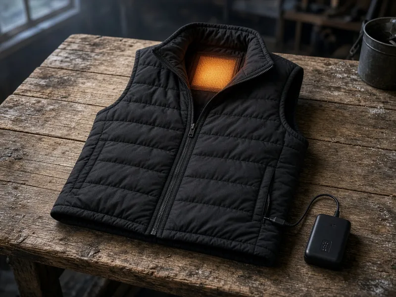
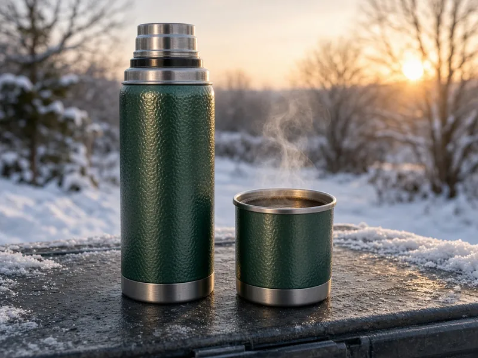
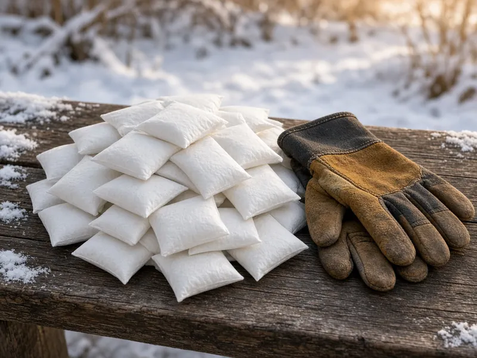
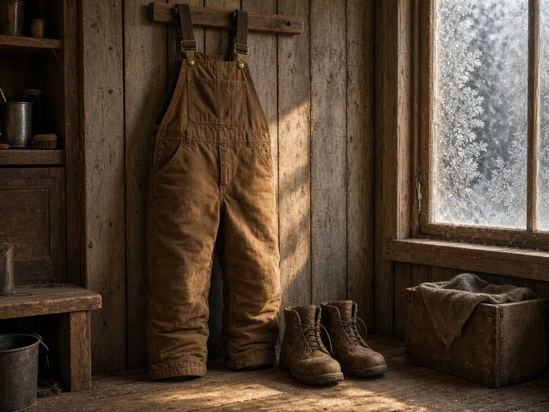
🧥 Outer layers🧤 Gloves & socks👕 Base layers🍲 Hot lunch
Insulated duck bibs that break in soft and block the wind.
Tap to see today's price on Amazon+ Add to Amazon cart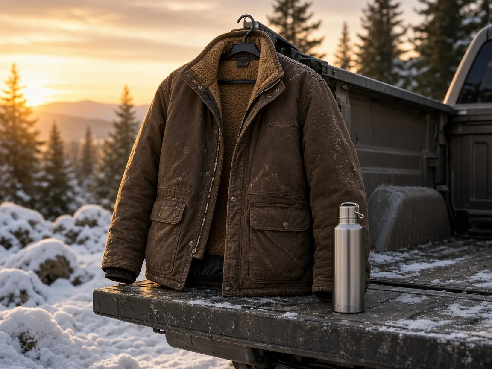
IllustrationThe classic hooded duck jacket. Wind-tough, flannel inside.
Tap to see today's price on Amazon+ Add to Amazon cartBattery heat under a jacket, so you're not stuck in a bulky coat.
Tap to see today's price on Amazon+ Add to Amazon cart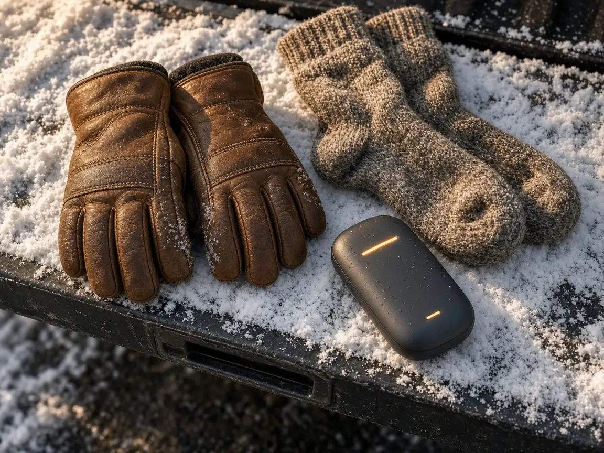
IllustrationWarm, waterproof, and still grips tools.
Tap to see today's price on Amazon+ Add to Amazon cart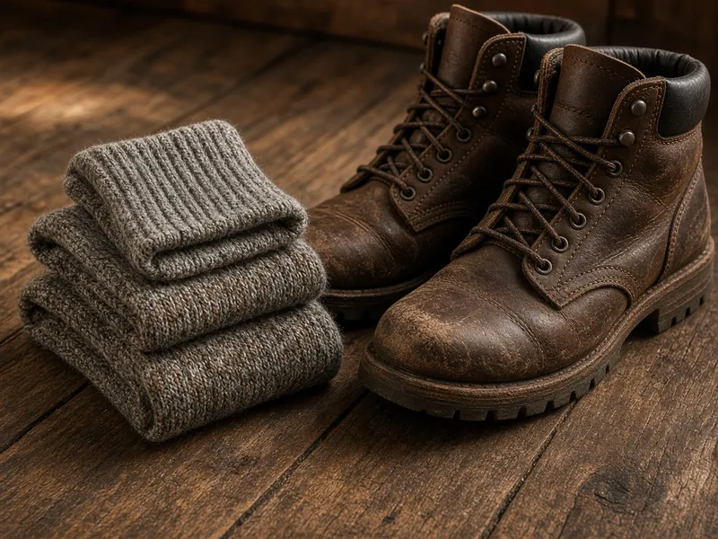
IllustrationThick, cushioned wool-blend sock for steel-toes and long shifts.
Tap to see today's price on Amazon+ Add to Amazon cart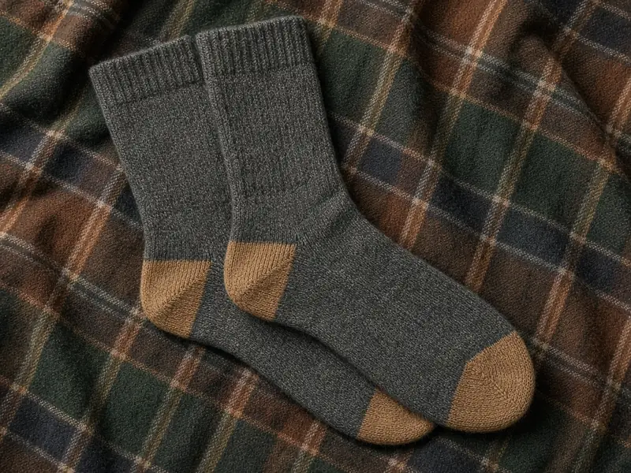
IllustrationLighter merino that wicks sweat on the move.
Tap to see today's price on Amazon+ Add to Amazon cart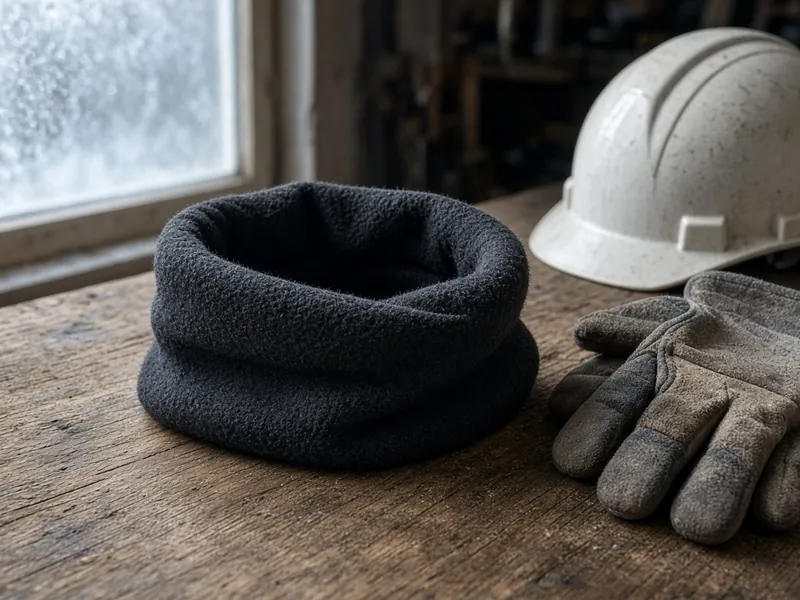
IllustrationWear it as a gaiter, balaclava or beanie.
Tap to see today's price on Amazon+ Add to Amazon cart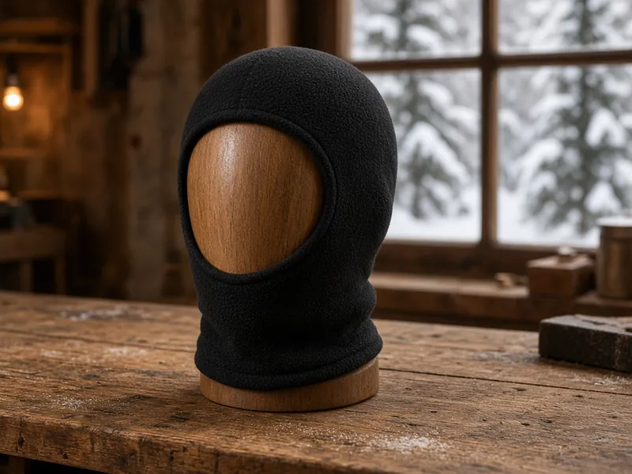
IllustrationFull-coverage fleece for brutal wind.
Tap to see today's price on Amazon+ Add to Amazon cart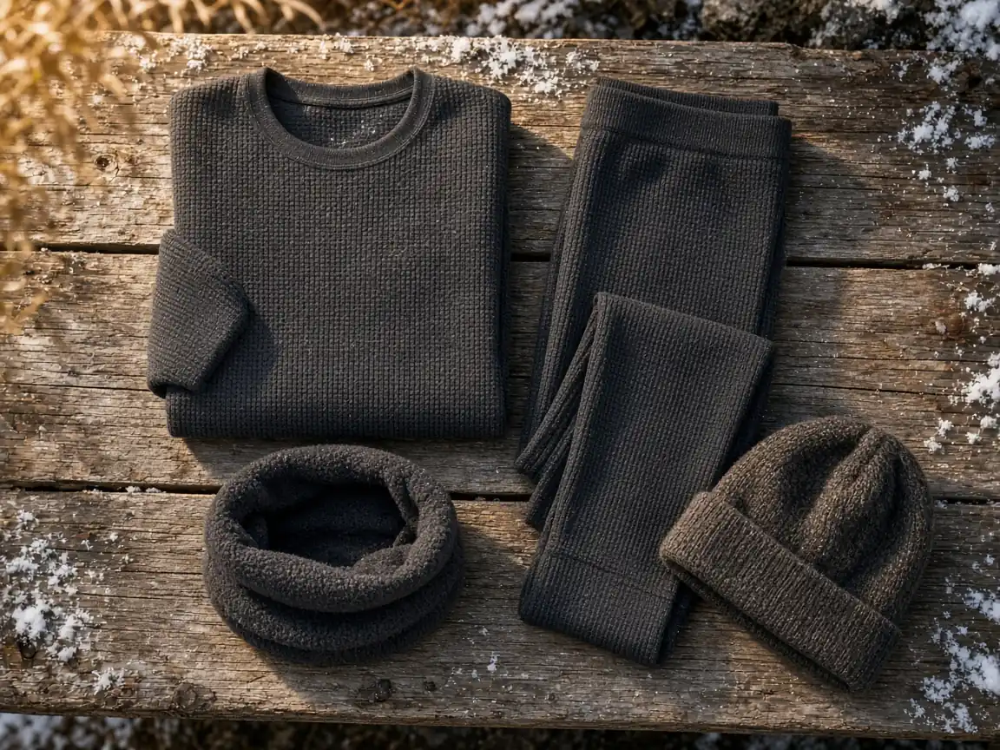
IllustrationWaffle-knit thermal top that wicks sweat under work layers.
Tap to see today's price on Amazon+ Add to Amazon cart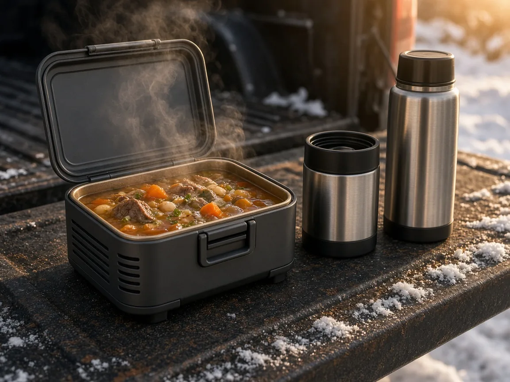
IllustrationPlug it in, and lunch is hot at break. No microwave line.
Tap to see today's price on Amazon+ Add to Amazon cart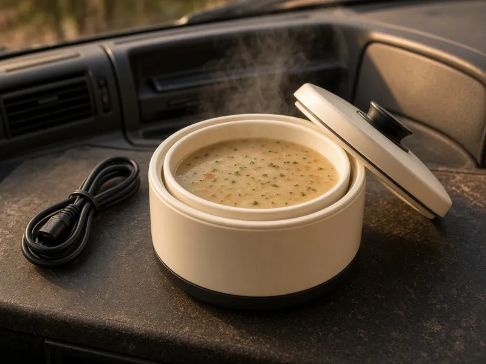
IllustrationWarms soup or leftovers in the break room.
Tap to see today's price on Amazon+ Add to Amazon cartThe truck-seat thermos. The lid doubles as a cup.
Tap to see today's price on Amazon+ Add to Amazon cartToss a pair in each glove before the shift.
Tap to see today's price on Amazon+ Add to Amazon cart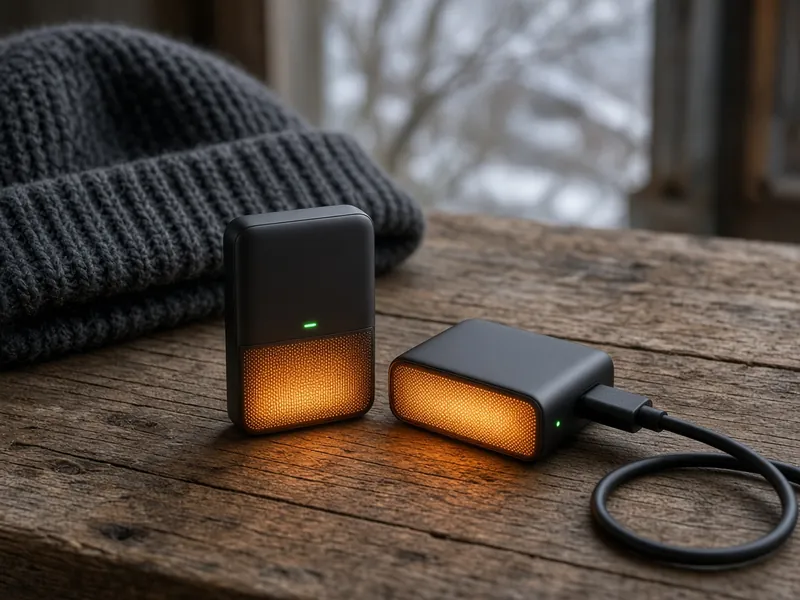
IllustrationRechargeable USB-C warmers that can also top up your phone.
Tap to see today's price on Amazon+ Add to Amazon cart